AI workflow là gì? Luồng công việc có AI cho SME
AI workflow là gì? Đó là quy trình làm việc có AI tham gia vào một hoặc nhiều bước xử lý, nối đầu vào với kết quả cần đạt. AI có thể đọc hiểu, phân loại, tóm tắt hoặc soạn nội dung; quy trình xung quanh quyết định khi nào chuyển bước, kiểm tra điều gì và ai được duyệt. Tôi là Lê Tuấn Việt, Marketing Leader tại TAKI Group. Bài này trình bày năm mẫu luồng có tên trong tài liệu của Anthropic, cách đọc con số 95% đúng phạm vi, ba lỗi âm thầm và năm bước dựng luồng đầu tiên.
- Đăng ngày
- Cập nhật

Tóm tắt nhanh
- AI workflow là quy trình có AI tham gia một hoặc nhiều bước, gồm năm thành phần: đầu vào, bước AI, kiểm tra, bàn giao và kết quả có trạng thái rõ.
- Workflow đi theo đường xử lý định sẵn, còn agent tự chọn bước; một luồng có AI chưa chắc là agent. Anthropic đặt tên năm mẫu luồng, trong đó Prompt Chaining là mẫu hợp với việc viết bài.
- Con số 95% của MIT đo riêng nhóm công cụ AI tự xây chưa đi vào vận hành, không đo mọi dự án AI. Nhóm vượt qua được gắn AI vào luồng đang tạo giá trị.
- Hãy phân biệt ba trạng thái đã soạn, đã duyệt, đã đăng và đo lợi ích bằng thời gian tới bản được duyệt, không bằng tốc độ tạo chữ.
Mục lục bài viết12 phần
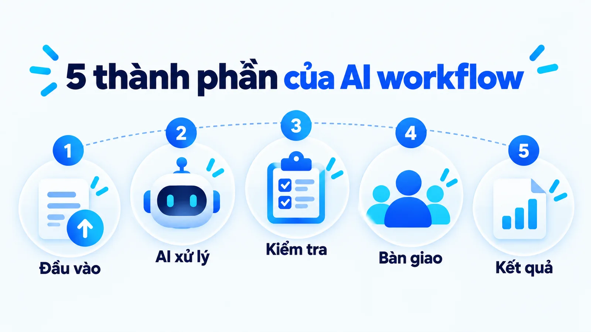
AI workflow là gì và gồm những thành phần nào?
AI workflow là gì? Đó là quá trình dùng công nghệ AI để tự động hóa hoặc hỗ trợ công việc, trong những chuỗi có cấu trúc mà AI thực hiện, phối hợp hoặc hỗ trợ cùng con người, theo mô tả của IBM. Phạm vi có thể nhỏ: một mô hình ngôn ngữ phân loại yêu cầu đến cũng đã là một luồng.
Không nhất thiết phải có nhiều agent hay để AI quyết định toàn bộ hoạt động. Hiểu AI workflow là gì giúp bạn đánh giá một quy trình thay vì chỉ đếm số công cụ được nối với nhau. Với AI Marketing, hãy nhìn năm thành phần dưới đây. Một câu trả lời AI đứng riêng chưa cho thấy các quan hệ này đã được thiết kế.
- Dữ liệu đầu vào: nêu rõ nguồn và phiên bản của tài liệu đang dùng.
- Bước AI xử lý: cần biết đây là bản nháp hay bản được dùng trực tiếp.
- Điều kiện kiểm tra và chuyển bước: có tiêu chí cụ thể, không dựa vào cảm nhận.
- Người hoặc hệ thống thực hiện tiếp: ai nhận việc sau khi bước trước xong.
- Kết quả có trạng thái rõ: phân biệt đã soạn, đã duyệt và đã đăng, vì ba trạng thái có trách nhiệm khác nhau.
Trong luồng nội dung, AI có thể nhận hồ sơ, soạn bản nháp, rồi chuyển qua kiểm dữ kiện và biên tập. Nếu hồ sơ thiếu, quy trình quay lại bổ sung. Nếu bản được duyệt, đó mới là kết quả của luồng biên tập; bước đăng web có thể thuộc một luồng khác.
Cách kiểm tra nhanh một mô tả quy trình có thật là luồng hay không: viết nó thành một câu có đủ năm thành phần. Ví dụ, nhận hồ sơ sản phẩm phiên bản tháng 9, AI soạn bản nháp theo góc bài đã chọn, kiểm tra ba khẳng định về vật liệu và kích thước, biên tập viên sửa và duyệt, đầu ra là bản đã duyệt kèm mã phiên bản hồ sơ.
Nếu không viết được câu đó, phần thiếu chính là phần sẽ gây lỗi khi chạy thật.
AI workflow và automation khác nhau ra sao?
Khác biệt nằm ở vai trò của AI trong bước xử lý. Theo IBM, nhiều công cụ tự động hóa có thêm AI nhưng điều đó không bắt buộc, vì chương trình theo quy tắc cũng xử lý tốt nhiều việc. Phần mềm có thể kiểm tra điều kiện rõ và chuyển việc theo quy tắc, chẳng hạn chỉ tiếp nhận biểu mẫu khi trường liên hệ đã được điền.
AI hữu ích ở những bước cần diễn giải đầu vào linh hoạt, như nhóm nhiều cách viết nhu cầu thành một loại yêu cầu. Nhưng AI có thể phân loại sai. Vì vậy, điều kiện kiểm tra và phương án chuyển người vẫn cần được thiết kế quanh bước đó.
| Khía cạnh | Theo quy tắc định sẵn | Có bước AI |
|---|---|---|
| Cách xử lý minh họa | Kiểm trường và điều kiện rõ | Diễn giải nội dung, soạn hoặc phân loại |
| Điều cần chuẩn bị | Điều kiện và trường hợp ngoại lệ | Nguồn, nhiệm vụ, tiêu chí và ngoại lệ |
| Lỗi có thể gặp | Sai quy tắc hoặc dữ liệu lỗi | Hiểu sai ngữ cảnh, bỏ sót dữ kiện |
| Bước tiếp theo | Theo logic đã thiết kế | Vẫn có thể theo logic đã thiết kế |
Bảng so sánh vai trò, không kết luận mọi automation truyền thống đều đơn giản hoặc không xử lý được văn bản. Một luồng có thể phối hợp hai cách: dùng AI soạn nháp, dùng quy tắc kiểm trường bắt buộc, rồi chuyển người duyệt nội dung.
Quy tắc chọn giữa hai cách khá đơn giản. Nếu bạn viết được điều kiện ra thành câu mà hai người đọc đều hiểu giống nhau, dùng quy tắc; quy tắc rẻ hơn, chạy nhanh hơn và khi sai thì biết ngay sai ở dòng nào.
Chỉ khi đầu vào có quá nhiều cách diễn đạt để liệt kê hết thì bước AI mới đáng thêm vào. Đặt AI vào chỗ quy tắc đã đủ là cách làm một luồng vừa đắt hơn vừa khó gỡ hơn mà không được lợi gì.
Workflow có AI có phải là AI agent?
Không nhất thiết. Anthropic đưa ra hai định nghĩa tách bạch trong tài liệu Building effective agents công bố ngày 19 tháng 12 năm 2024. Workflow là hệ thống trong đó mô hình ngôn ngữ và công cụ được điều phối qua những đường xử lý đã được lập trình sẵn. Agent là hệ thống trong đó mô hình tự điều khiển quá trình và việc dùng công cụ của chính nó, giữ quyền kiểm soát cách hoàn thành nhiệm vụ.
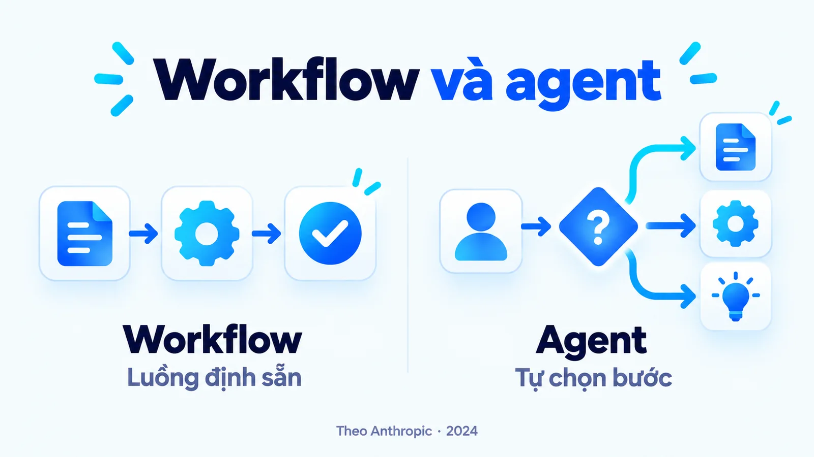
Một quy trình nhận hồ sơ, soạn, kiểm rồi duyệt có thể dùng AI mà không giao quyền tự chọn đường đi. Đây là điểm cần hỏi khi đọc mô tả sản phẩm: bước nào đã cố định, bước nào được AI quyết định? Nếu mọi nhánh đều do đội vận hành xác lập, tính nhiều bước chưa đủ chứng minh hệ thống là agent.
Cùng tài liệu đó khuyên nên thận trọng với độ phức tạp. Hệ thống dạng agent thường đánh đổi độ trễ và chi phí để lấy kết quả tốt hơn, nên cần cân nhắc khi nào sự đánh đổi này đáng giá. Với nhiều ứng dụng, tối ưu một lượt gọi mô hình kèm truy xuất tài liệu và ví dụ trong ngữ cảnh đã là đủ. Để hiểu phần giao nhau, đọc tiếp bài AI agent và chatbot khác nhau thế nào.
Năm mẫu luồng công việc có tên là gì?
Anthropic đặt tên cho năm mẫu luồng, và biết tên chúng giúp bạn mô tả đúng thứ mình cần thay vì nói chung chung là làm một quy trình AI.
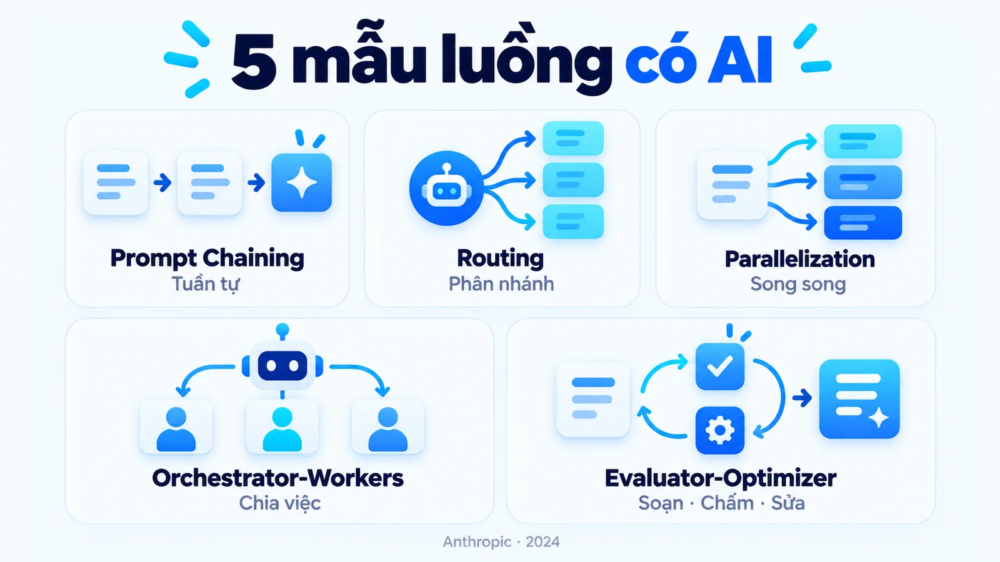
- Prompt Chaining: chia nhiệm vụ thành các bước tuần tự, đầu ra của bước này là đầu vào cho bước kế tiếp trong chuỗi.
- Routing: phân loại đầu vào rồi đưa sang nhánh xử lý chuyên biệt tương ứng.
- Parallelization: chạy nhiều việc cùng lúc, hoặc chia phần rồi ghép lại, hoặc lấy kết quả theo số phiếu của nhiều lần chạy.
- Orchestrator-Workers: một mô hình trung tâm chia nhỏ nhiệm vụ rồi giao từng phần việc cho các mô hình thợ thực hiện.
- Evaluator-Optimizer: một mô hình soạn và một mô hình chấm, lặp lại tới khi đạt tiêu chí.
Với công việc marketing của một SME, bốn mẫu đầu phủ gần hết nhu cầu. Mẫu thứ năm đáng dùng khi chất lượng quan trọng hơn tốc độ, ví dụ nội dung đăng lên website chính thức.
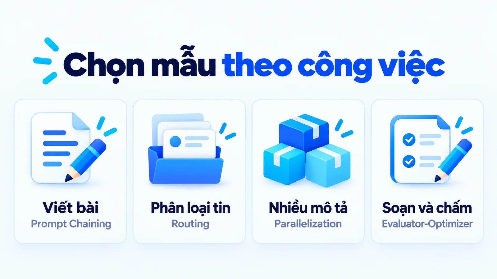
Routing là mẫu bị bỏ qua nhiều nhất
Routing thường tiết kiệm nhất nhưng ít được nhắc tới trong marketing. Một hộp thư tư vấn nhận lẫn lộn câu hỏi về giá, câu hỏi kỹ thuật và khiếu nại vận chuyển.
Thay vì dùng một prompt chung cố trả lời cả ba loại, bước phân loại đưa mỗi loại sang một nhánh có tài liệu riêng và tiêu chí riêng. Nhánh khiếu nại có thể không dùng AI soạn câu trả lời mà chuyển thẳng người phụ trách, vì đây là loại việc mà sai một câu tốn nhiều hơn tiết kiệm được.
Một lưu ý về Orchestrator-Workers: mẫu này dành cho nhiệm vụ mà bạn không biết trước cần chia thành mấy phần. Nếu bạn biết trước, Parallelization đơn giản hơn và rẻ hơn. Chọn sai mẫu là cách phổ biến làm một luồng đơn giản trở nên khó kiểm soát.
Vì sao phần lớn dự án dừng lại ở bản thử nghiệm?
Vì quãng từ một bản chạy được trong phòng họp tới một bản chạy được hằng ngày khó hơn nhiều so với vẻ ngoài.
Có một con số hay được trích dẫn cho câu hỏi này, và nó hay bị dùng sai phạm vi. Báo cáo State of AI in Business 2025 của MIT, theo tường thuật của Forbes ngày 26 tháng 8 năm 2025, ghi nhận khoảng 95% công cụ AI tự xây không vượt qua được ranh giới từ thử nghiệm sang vận hành thật.
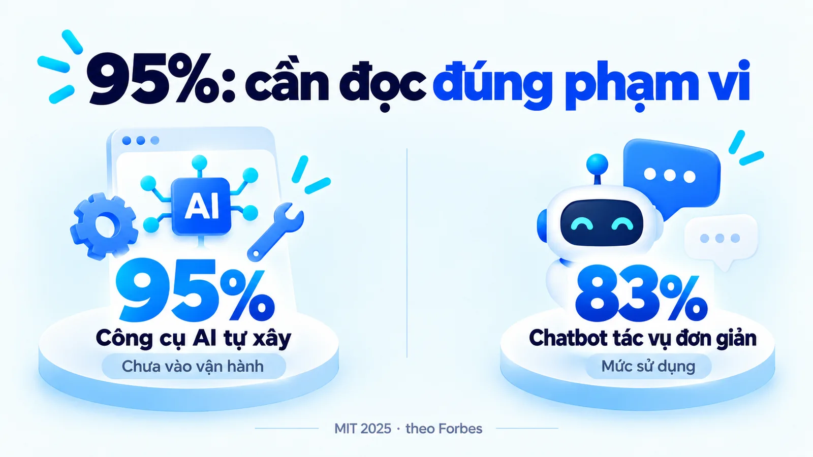
Đây là chỗ cần đọc kỹ. Con số không nói mọi dự án AI đều hỏng. Nó đo riêng nhóm công cụ tự xây đi vào vận hành thật. Cùng báo cáo đó ghi nhận chatbot phổ thông dùng cho các tác vụ đơn giản đạt mức sử dụng khoảng 83%. Nghĩa là phần dễ thì chạy tốt, phần khó thì hỏng, và chỗ hỏng nằm ở quãng giữa.
Một lưu ý về nguồn: báo cáo dựa trên 52 cuộc phỏng vấn lãnh đạo, khảo sát 153 lãnh đạo và rà soát hơn 300 dự án công bố công khai, và chính báo cáo ghi đây là phát hiện sơ bộ. Vì vậy, hãy đọc con số này như một chỉ dấu về nơi dự án hay gặp khó, không phải thống kê toàn thị trường.
Nhóm vượt qua được quãng đó có bốn đặc điểm chung theo báo cáo.
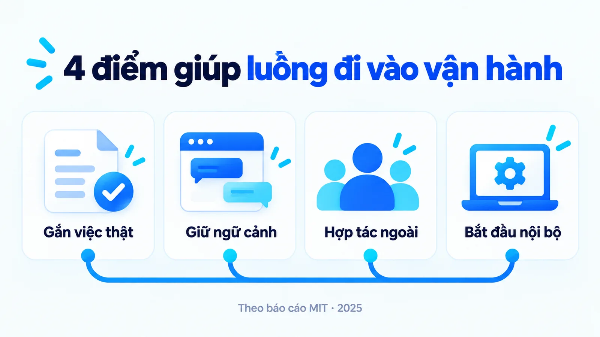
- Gắn việc thật: gắn công cụ vào một luồng công việc đang tạo ra giá trị, thay vì dựng một công cụ đứng riêng.
- Giữ ngữ cảnh: tích hợp sâu, giữ được ngữ cảnh và cải thiện theo phản hồi.
- Hợp tác ngoài: làm việc với đơn vị bên ngoài, cách này theo báo cáo hiệu quả gấp khoảng hai lần so với tự xây hoàn toàn trong nội bộ.
- Bắt đầu nội bộ: khởi đầu từ khối vận hành nội bộ, không phải từ các việc tiếp xúc khách hàng.
Đặc điểm thứ tư đáng dịch sang bối cảnh một SME Việt Nam. Bắt đầu từ khối vận hành nội bộ nghĩa là chọn những việc mà khi AI làm sai thì người trong đội phát hiện trước khi khách hàng thấy: soạn bản nháp mô tả sản phẩm, tóm tắt phản hồi khách để họp tuần, chuẩn hóa dữ liệu nhập từ biểu mẫu.
Ngược lại, tin nhắn trả lời khách và nội dung quảng cáo đã chạy là chỗ một lỗi đi trực tiếp ra ngoài, nên để sau khi luồng đã ổn định vài tháng.
Ba đặc điểm đầu đều nói về cùng một điều: giá trị nằm ở luồng, không nằm ở bước AI. Đây cũng là lý do bài này viết về workflow chứ không viết về prompt.
Ví dụ SME: soạn bài giới thiệu lều cắm trại
Xét một cửa hàng đồ dã ngoại thuộc nhóm SME (doanh nghiệp vừa và nhỏ) cần bài giới thiệu lều hai người. Mục tiêu của luồng là tạo bản được duyệt từ hồ sơ sản phẩm.
Đây là ví dụ giả định
Cửa hàng đồ dã ngoại này dùng để giải thích cách vận hành, không phải sản phẩm đã được kiểm định hoặc kết quả triển khai của một khách hàng thật.
Đầu vào gồm hồ sơ đúng dòng lều, hướng dẫn sử dụng và câu hỏi của người mua. Người biên tập chọn góc bài trước: giải thích cách cân nhắc không gian sử dụng. Nếu chưa rõ góc, AI có thể tạo một bài chung chung dù hồ sơ đầy đủ. Đọc tiếp bài Content angle là gì để tách mục tiêu nội dung khỏi thao tác soạn.
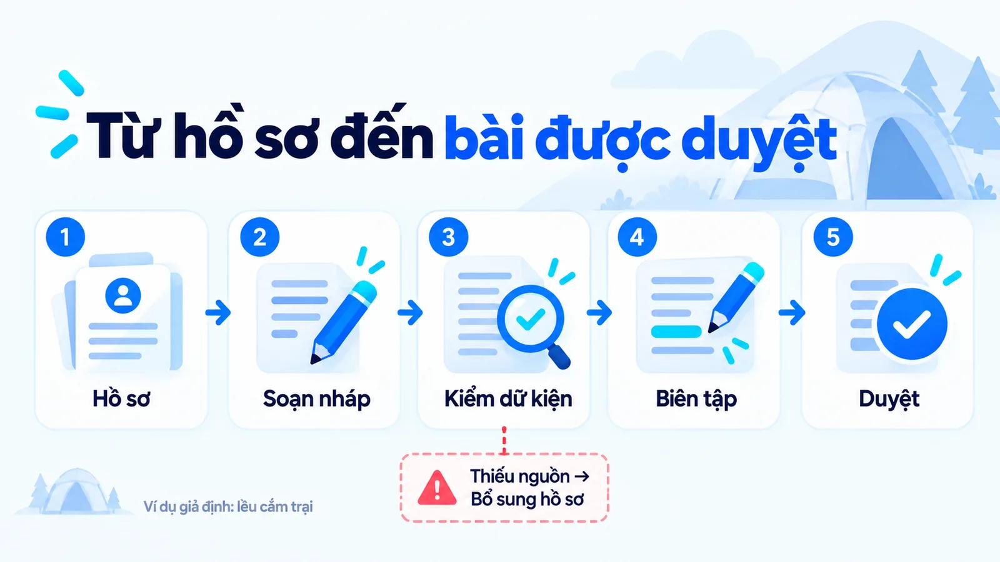
Ở bước soạn, AI được yêu cầu dùng thông tin có trong hồ sơ và ghi riêng chỗ chưa đủ căn cứ. Đầu ra là bản nháp, kèm các khẳng định cần đối chiếu. Không biến một mô tả về vật liệu thành cam kết chịu được mọi điều kiện thời tiết.
Bước kiểm tra đối chiếu đúng phiên bản và điều kiện sử dụng. Bước biên tập sửa cách diễn đạt cho người mua hiểu. Người duyệt sau cùng nhìn thấy bản đã chỉnh và căn cứ, thay vì chỉ nhận thông báo rằng AI đã viết xong.
Nhìn lại luồng này theo tên mẫu, đây là Prompt Chaining. Mỗi bước nhận đầu ra của bước trước và thêm một lớp giá trị. Nó không cần agent, không cần mô hình tự chọn đường đi, và chính vì vậy nó dễ kiểm tra khi có sự cố.
Ba trạng thái nào phải phân biệt được?
Đã soạn, đã duyệt và đã đăng. Gộp ba trạng thái này là nguyên nhân phổ biến nhất của một bài đăng sai.
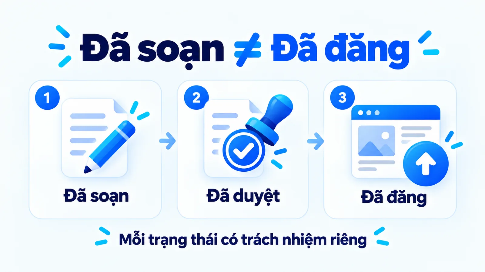
Kết quả hợp lệ là bản đáp ứng tiêu chí và có dấu vết phiên bản. Chỉ khi một bước đăng bài được giao và xác nhận thành công, hệ thống mới ghi đã đăng. Nội dung xuất hiện trong khung soạn không chứng minh người đọc đã thấy trên website.
Ghi ba trạng thái này không cần công cụ mới. Một cột trạng thái trong bảng tính đã đủ, miễn là mỗi dòng ghi thêm ba thứ: ai đổi trạng thái, lúc nào, và dựa trên hồ sơ phiên bản nào. Đội nào để trạng thái nằm trong đầu người phụ trách thì lúc có sự cố sẽ mất nửa ngày chỉ để dựng lại chuyện gì đã xảy ra, và thường là dựng lại sai.
Lỗi im lặng khi hồ sơ đổi giữa chừng
Có một biến thể của lỗi này khó phát hiện hơn nhiều, vì nó không tạo ra thông báo nào: hồ sơ đầu vào bị cập nhật sau khi bản nháp đã được soạn.
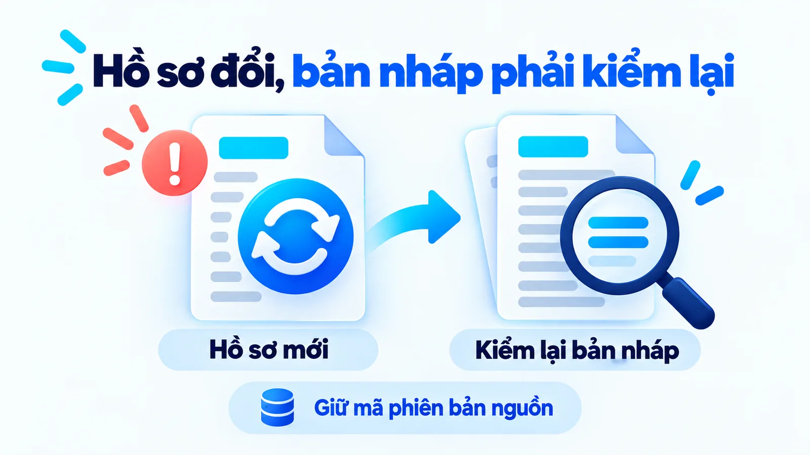
Nếu hồ sơ được cập nhật giữa chừng, bản nháp cũ cần được xem lại ở những phần bị ảnh hưởng. Đổi tài liệu đầu vào nhưng giữ nguyên trạng thái đã duyệt có thể khiến luồng chuyển tiếp một bản không còn đúng phiên bản. Cách sửa là mỗi bản nháp mang theo mã phiên bản của hồ sơ đầu vào, để khi hồ sơ đổi, luồng tự đánh dấu các bản nháp bị ảnh hưởng.
Điểm dễ lỗi nằm ở đâu trong một luồng?
Ở các lần chuyển bước, không ở bản thân bước AI. Một bước AI có thể tạo câu rõ nhưng thiếu nguồn; một bước chuyển việc có thể đưa đúng bản cho sai người. Vì vậy, chất lượng workflow cần được nhìn cả ở nội dung và ở quan hệ giữa các bước.
Thiếu căn cứ thì trả lại yêu cầu bổ sung
Nếu chưa có căn cứ về tính năng, luồng nên trả lại yêu cầu bổ sung hồ sơ. Chạy lại cùng prompt với cùng dữ liệu thiếu không tự giải quyết nguyên nhân. Bài Ảo giác AI là gì giúp nhận diện loại khẳng định cần kiểm chứng.
Thử lại một bước khác với nhiệm vụ mới
Lỗi thứ hai xảy ra khi hệ thống hỏng giữa chừng, và nó tạo ra một loại rác khó dọn.
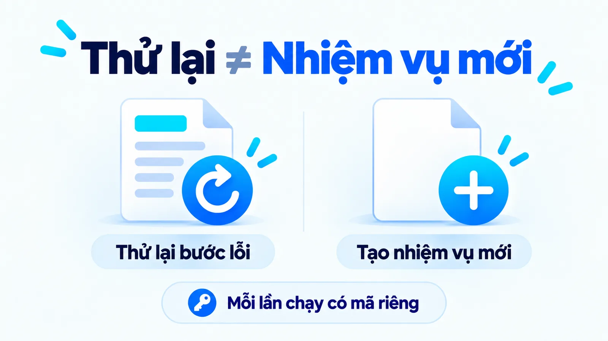
Nếu hệ thống lỗi sau khi lưu bản nháp nhưng trước khi báo trạng thái, cần biết bản nào đã tồn tại. Khởi động lại toàn bộ có thể tạo nhiều bản giống nhau và khiến người duyệt chọn nhầm. Quy trình nên phân biệt thử lại một bước với thực hiện một nhiệm vụ mới, và cách làm là mỗi lần chạy mang một mã định danh riêng.
Bàn giao thiếu ngữ cảnh
Lỗi thứ ba nằm ở chỗ bàn giao. Chuyển người phải đi kèm ngữ cảnh: phần thiếu, tài liệu đang dùng và hành động đang chờ.
Một hàng chờ không rõ lý do khiến người nhận phải đọc lại mọi thứ. Ba lỗi vừa nêu đều có chung một đặc điểm: chúng không nằm trong chất lượng câu chữ mà AI tạo ra, nên một đội chỉ đo chất lượng bản nháp sẽ không bao giờ thấy chúng. Người nhận bàn giao cần thấy gì để duyệt đúng được phân tích trong bài Human-in-the-loop là gì.
Đo lợi ích của một luồng bằng gì?
Bằng thời gian từ lúc đủ hồ sơ tới lúc có bản được duyệt, không bằng tốc độ tạo chữ. AI workflow có thể giảm thao tác chuyển dữ liệu và hỗ trợ soạn nhanh hơn. Nhưng nếu bản nháp cần sửa nhiều hoặc hồ sơ luôn thiếu, tốc độ tạo chữ chưa phản ánh thời gian để có bản dùng được.
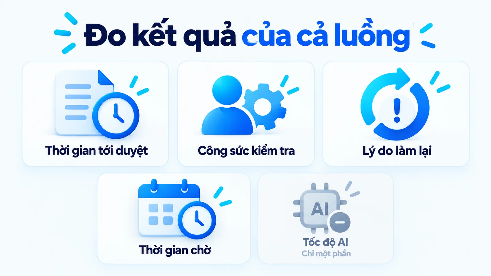
Hãy xem thời gian từ nhận đủ hồ sơ đến có bản được duyệt, phần nhân sự dùng để kiểm tra và nguyên nhân phải làm lại. Tách thời gian hệ thống xử lý với thời gian chờ người phụ trách; nếu chờ là điểm nghẽn, đổi mô hình AI có thể không giải quyết vấn đề.
Tôi ưu tiên sửa bước đang gây tắc nghẽn trước khi tự động hóa thêm các bước khác. Nếu điều kiện đơn giản và ổn định, quy tắc rõ có thể đủ. Nếu cần phán đoán nội dung, người duyệt phải có thông tin và thời gian để làm việc đó.
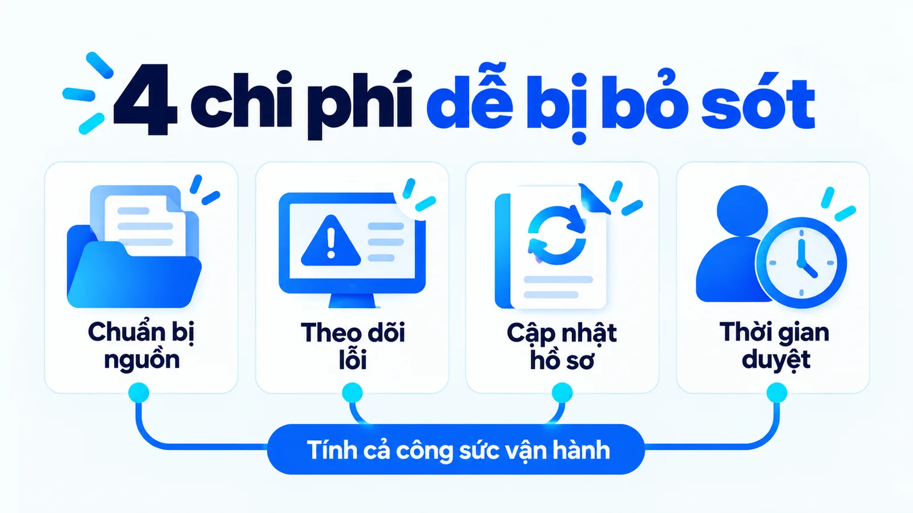
Chi phí còn gồm bốn khoản dễ bỏ sót: chuẩn bị nguồn, theo dõi lỗi, cập nhật hồ sơ khi sản phẩm thay đổi và thời gian duyệt. Không có một tỷ lệ tiết kiệm chung cho mọi SME. So sánh cùng loại công việc và cùng tiêu chí chất lượng mới giúp hiểu lợi ích thực tế.
Muốn so sánh được thì phải có số nền, và số nền phải đo trước khi dựng luồng. Trong hai tuần, ghi lại với mười bài gần nhất: mỗi bài mất bao nhiêu giờ từ lúc đủ hồ sơ tới lúc duyệt, sửa mấy vòng, và lý do của từng vòng sửa.
Không có mười dòng này thì sau khi triển khai, mọi tranh luận về việc luồng mới có tốt hơn hay không sẽ dựa vào cảm nhận, và cảm nhận thường nghiêng về phía người đã bỏ công dựng luồng.
Bắt đầu một luồng AI đầu tiên từ đâu?
Từ việc đang bị tắc, không từ việc dễ tự động nhất. Đây là khác biệt giữa nhóm 5% và phần còn lại trong báo cáo đã dẫn: giá trị đến từ việc gắn AI vào một luồng đang tạo ra kết quả, chứ không từ việc dựng thêm một công cụ mới.
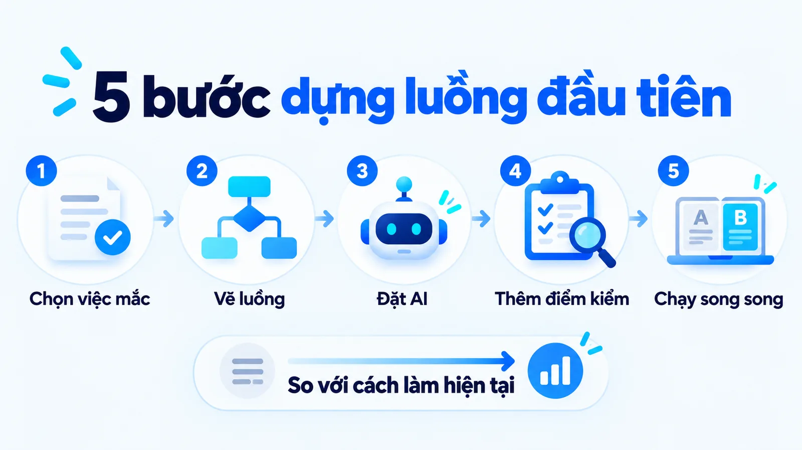
Bước 1: Chọn việc đang bị tắc
Chọn một công việc lặp lại, có đầu vào và tiêu chí hoàn tất rõ, đang làm chậm cả đội, chẳng hạn soạn bản nháp mô tả sản phẩm. Ghi số nền của mười bài gần nhất trước khi làm gì khác.
Bước 2: Vẽ luồng ra giấy
Vẽ năm thành phần ra giấy khi chưa có công cụ nào, chạy thủ công một tuần, và bạn sẽ thấy chỗ tắc thật thường không nằm ở chỗ bạn nghĩ. Nhiều đội tự động hóa bước soạn trong khi điểm nghẽn thật là bước chờ người duyệt hoặc bước gom hồ sơ.
Bước 3: Đặt AI vào đúng chỗ cần diễn giải
Chỉ thêm bước AI ở nơi đầu vào có quá nhiều cách diễn đạt để viết thành quy tắc, như soạn nháp hoặc phân loại yêu cầu. Chọn mẫu theo hình dạng công việc; với luồng viết bài từ hồ sơ, Prompt Chaining thường là đủ. Một ví dụ khác là xếp gợi ý sản phẩm theo từng khách, được phân tích trong bài AI personalization là gì.
Bước 4: Thêm điểm kiểm và người chịu trách nhiệm
Mỗi lần chuyển bước cần một tiêu chí kiểm và một điểm dừng nêu rõ thiếu gì, kèm những quyền mà người duyệt phải có tại điểm đó theo bài Human-in-the-loop là gì.
Một luồng cũng cần có người chịu trách nhiệm, và với SME thì đó thường không phải người giỏi công cụ nhất mà là người hiểu rõ nhất phần việc đang tắc. Người này quyết định tiêu chí đầu ra, xử lý các ca rơi vào điểm dừng và quyết định khi nào sửa luồng.
Luồng không có chủ thì sau vài tuần sẽ có người bỏ qua một bước kiểm để kịp việc, rồi cả đội mất niềm tin vào kết quả mà không ai biết đã hỏng từ chỗ nào.
Bước 5: Chạy song song với cách làm hiện tại
Chạy song song hai tuần với cách cũ tốn công, nhưng đó là cách duy nhất biết được luồng mới thật sự tốt hơn ở điểm nào, và tốt hơn bao nhiêu. Bỏ cách cũ ngay sau buổi demo là cách nhanh nhất rơi vào nhóm 95%.
Ba sai lầm hay gặp khi dựng luồng
Mỗi sai lầm dưới đây có một cách sửa cụ thể, không phải một lời khuyên chung.
Tự động quá sớm là tự động hóa trước khi biết điểm nghẽn thật nằm ở đâu. Lặp prompt khi thiếu nguồn là chạy lại cùng prompt với cùng dữ liệu thiếu; cách sửa là trả lại yêu cầu bổ sung hồ sơ. Chỉ đo tốc độ AI bỏ qua thời gian chờ và làm lại; cách sửa là đo thời gian tới bản được duyệt và sửa điểm nghẽn của cả luồng.
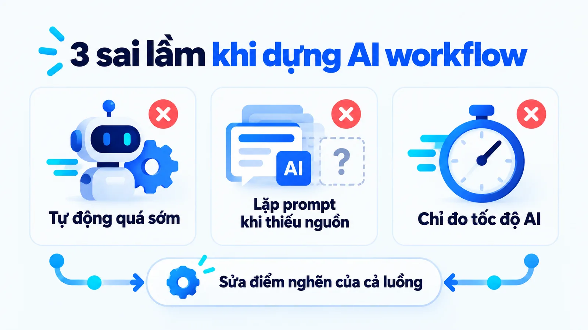
Câu hỏi thường gặp về AI workflow
Một workflow có thể chỉ dùng AI ở một bước không?
Có. Chẳng hạn AI tóm tắt yêu cầu, còn kiểm trường, bàn giao và duyệt theo cách đã thiết kế. Giá trị nằm ở việc bước AI hỗ trợ mục tiêu của toàn luồng.
Có người duyệt thì còn gọi là workflow tự động không?
Có thể tự động một phần. Cần nói rõ phần nào tự chạy và phần nào chờ người. Điều này giúp đánh giá khối lượng công việc còn lại mà không hứa tự động toàn bộ.
Vì sao AI viết tốt nhưng quy trình vẫn chậm?
Có thể do đầu vào thiếu, chờ duyệt hoặc bàn giao chưa rõ. Hãy xem trạng thái từng bước thay vì chỉ thời gian mô hình trả lời.
Nên chọn mẫu luồng nào cho việc viết nội dung?
Prompt Chaining là mẫu phù hợp nhất cho luồng viết bài từ hồ sơ sản phẩm, vì mỗi bước nhận đầu ra bước trước và thêm một lớp giá trị. Evaluator-Optimizer đáng dùng khi nội dung đòi chất lượng cao hơn tốc độ.
Con số 95% dự án AI thất bại có đúng không?
Đúng nhưng cần đọc đúng phạm vi. Theo báo cáo của MIT, con số đó đo riêng nhóm công cụ AI tự xây không vượt được từ thử nghiệm sang vận hành thật. Cùng báo cáo ghi nhận chatbot phổ thông cho tác vụ đơn giản đạt mức sử dụng khoảng 83%.
Nên tự xây hay thuê đơn vị bên ngoài?
Báo cáo của MIT ghi nhận việc hợp tác với đơn vị bên ngoài hiệu quả gấp khoảng hai lần so với tự xây hoàn toàn trong nội bộ. Với một SME chưa có đội kỹ thuật riêng, đây là chỉ dấu đáng cân nhắc, dù không phải quy tắc cho mọi trường hợp.
Kết luận: AI workflow là gì và nên bắt đầu thế nào?
Tóm lại, AI workflow là luồng công việc có AI ở một hoặc nhiều bước, và giá trị của nó nằm ở đầu vào đúng phiên bản, điểm kiểm tra, trạng thái rõ và người chịu trách nhiệm. Một workflow tốt tạo ra kết quả dùng được và chỉ rõ phần việc còn cần xử lý.
Hãy chọn một việc đang bị tắc, đo số nền, chạy song song với cách cũ, và chỉ mở rộng khi luồng đã chứng minh được mình tốt hơn. Xem thêm các bài khác trong chuyên mục AI Marketing hoặc những dự án tôi đã triển khai.